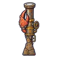

ปูสนิมเหมือง
มอนธาตุดิน Lv 62–72
เจอที่
| แมพ | โซน | Lv | ภูมิภาค |
|---|---|---|---|
| ห้องสูบน้ำเหมืองท่วม | 62–68 | แดนใต้สีแดง | |
| ห้องสูบน้ำเหมืองท่วม | 64–72 | แดนใต้สีแดง | |
| ห้องสูบน้ำเหมืองท่วม | เครื่องสูบน้ำยักษ์ | 68–70 | แดนใต้สีแดง |
| ห้องสูบน้ำเหมืองท่วม | เครื่องสูบน้ำยักษ์ | 70–72 | แดนใต้สีแดง |
ค่าสถานะตามเลเวล
| Lv | HP | ATK | DEF | MDEF | EXP | Job |
|---|---|---|---|---|---|---|
| 62 | 25,695 | 121–180 | 37 | 11 | 84 | 63 |
| 67 | 32,292 | 133–198 | 40 | 12 | 90 | 68 |
| 72 | 39,540 | 145–217 | 43 | 13 | 96 | 72 |
ตีด้วยธาตุไหนดี
แรงขึ้น: ไฟ ×1.5 พิษ ×1.25
เบาลง: ลม ×0.5 ดิน ×0.25
วัตถุดิบที่ดรอป
| ของ | โอกาส | |
|---|---|---|
| หมุดเกราะสนิม | 55% | 1 ชิ้น (15% ได้ 2) |
อุปกรณ์ที่ดรอป (1)
| ของ | โอกาส |
|---|---|
 ลูกซองหม้อน้ำปูสนิม | 0.25% |
สกิล
หนามสะท้อน (Lv 25+) · หนามสะท้อน (Lv 60+) · ยิงไกล (Lv 60+)